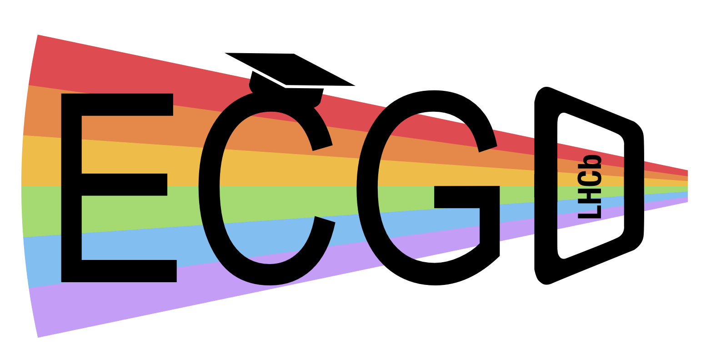

Early career, gender and diversity
Learning Objectives
Discover the LHCb Early Career, Gender and Diversity office (ECGD).
Learn about the ECGD office’s composition and its initiatives.
Learn how/when the ECGD office can be useful for you.
Introduction

The Early Career, Gender and Diversity (ECGD) office is an important body of our collaboration. It was first introduced in 2014 after being ratified by LHCb’s Collaboration Board. LHCb was the first amongst the large HEP collaborations to create such a body!
The structure of the LHCb collaboration
The LHCb collaboration, as of 2025, is composed of over 1700 members, from more than 100 institutes and 24 countries. The LHCb constitution describes how the collaboration is organised at various levels. The highest authority is the Collaboration Board (CB), the body through which all major decisions for LHCb are taken. It is formed by representatives from each of the LHCb member institutes. LHCb’s executive body is the LHCb Management, who is responsible for organising LHCb’s operations, future upgrades, physics output, and resources.
The LHCb constitution defines the ECGD office, its structure and its goals. Quoting from the constitution:
The Early Career, Gender and Diversity (ECGD) Office oversees the well-being and working environment of all LHCb members.
The office also is concerned with all matters associated with gender and diversity, as well as with the needs of the early career members of the collaboration. The office is there to support individuals who have experienced or witnessed any type of discrimination, harrassment, or other inappropriate behaviour which violates the LHCb Code of Conduct.
The office monitors the collaboration’s performance in terms of diversity and inclusion, collating regular statistics. Finally, it advices the LHCb Management on ECGD related matters.
Who makes up the office?
The office is made up of two ECGD officers, and two Early Career (EC) representatives. You can find the people currently holding these roles on the ECGD webpage.
One ECGD officer and one EC representative are invited to attend the CB meetings as non-voting members.
The ECGD officers
These are senior(-ish) members of the collaboration; their seniority ensures they can act independently and without fear of intimidation or retaliation. They remain active in their research while carrying out their roles. They are proposed by the LHCb Management and appointed by the CB for two years.
They are the point of contact for confidential matters.
confidential matters
While the ECGD officers offer a confidential conversation, it may be necessary to break this confidentiality if the conversation reveals severe and immediate potential dangers to yourself or others.
The EC representatives
Since 2020, two early-career members of the collaboration are elected by the LHCb EC community for a one year term as EC representatives (automatically extendable to two years). They listen to the concern and needs of the EC community, and coordinate with their counterparts in the other LHC experiments to organise LHC-wide activities.
The LHCb EC community is defined by the e-group lhcb-early-career, which automatically includes all students and postdocs. If you do not fall into one of these two categories and would like to join the community, you can do so by subscribing to the e-group lhcb-early-career-subscribe, on the CERN e-groups webpage. If you do not wish to be part of the community, you can leave by subscribing to the e-group lhcb-early-career-unsubscribe.
ECGD activities
The office has started, or been a part of, many intiatives with the goal of improving the working environment of all LHCb members. These are advertised on the ECGD webpage, which the ECGD officers mantain, and as part of the “Weekly News” newsletter circulated by the LHCb Secretariat on Fridays.
It also organises a plenary session at every LHCb Week, covering a plethora of topics related to ECGD matters, such as (full list on the ECGD webpage):
Accessibility of LHCb meetings.
How to provide effective feedback.
Visibility and recognition of technical work within the collaboration.
Work related stress.
Supporting transgender and non-binary colleagues.
Gender balance of senior-level roles of the collaboration.
Healthy teamwork practices.
The office also supports other community-led activities:
The Laura Bassi initiative. Setup in 2019, its aim is to bring LHCb members together to discuss tackling the challenges women and other underrepresented groups in the collaboration face in HEP. Its meetings are held during every LHCb week, and while independent of the ECGD office, there is often overlap in the topics discussed. Anyone can join in, however colleagues who do not identify in a underrepresented group are invited to take on a slightly more passive role, as these meetings are meant to be a safe place for everyone in the collaboration.
The Starterkit!
Early-career LHC-wide activites
The EC representatives, along with their other LHC counterparts, are part of the LHC Early Career Scientist Fora (ECSF), which organises a variety of recurring events:
Mentoring@CERN (Joint ECSF and Women in Technology program)
More information
Here are some other useful links surrounding LHCb’s structure and the ECGD:
ECGD’s email contact (note that all members of the office will receive the email. For confidential matters please refer to the individual emails of the ECGD officers.)